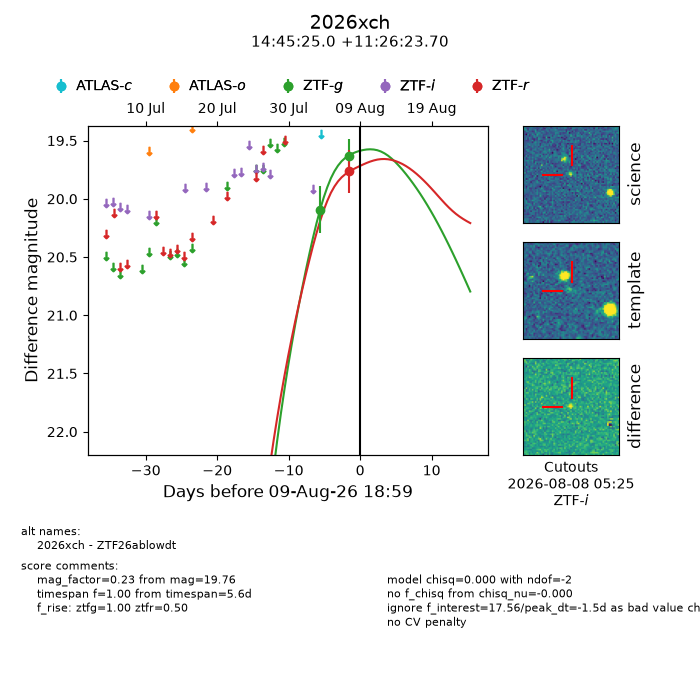
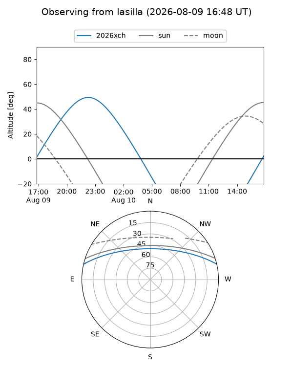
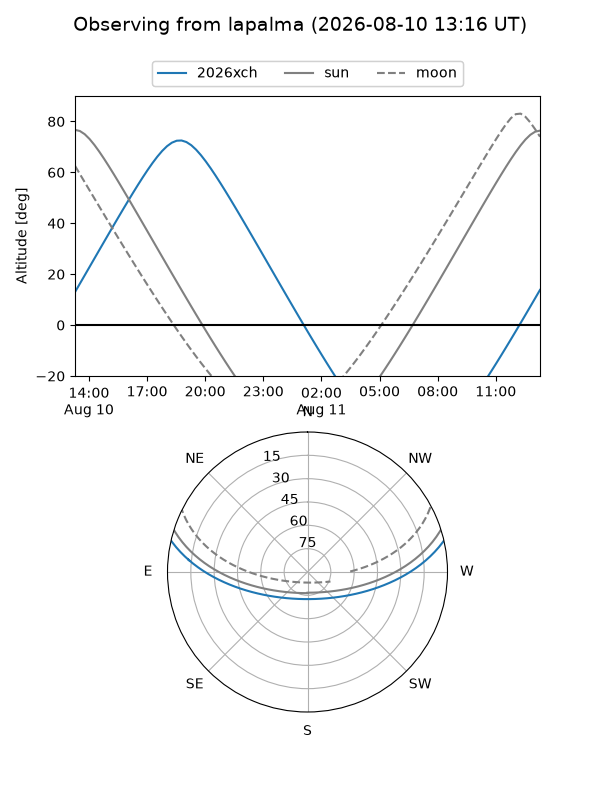
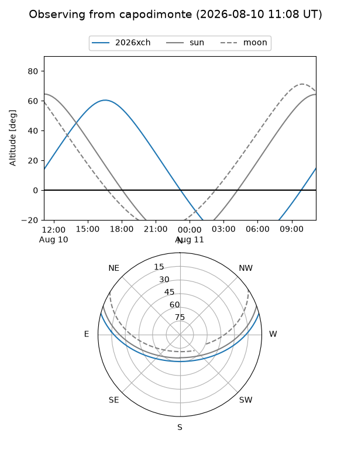
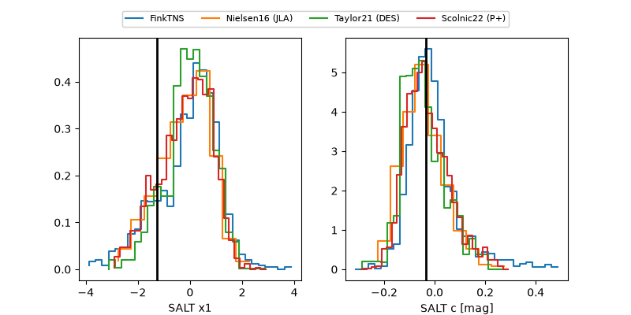

2026xch
Target 2026xch at 2026-08-10 06:55
Aliases and brokers:
FINK-ZTF: ztf.fink-portal.org/ZTF26ablowdt
Lasair-ZTF: lasair-ztf.lsst.ac.uk/objects/ZTF26ablowdt
ALeRCE-ZTF: alerce.online/object/ZTF26ablowdt
YSE-PZ: ziggy.ucolick.org/yse/transient_detail/2026xch
TNS name: wis-tns.org/object/2026xch
Direct TNS query: direct search
alt names
ZTF26ablowdt (ztf,fink_ztf)
2026xch (tns,yse)
Coordinates:
equatorial (ra, dec) = 221.3542,+11.43992
equatorial (HMS+DMS) = 14:45:25.00,+11:26:23.70
galactic (l, b) = (8.1114,+58.98992)
Flags:
TNS type: nan
peak dt: -1.0
Photometry:
last ztfg=19.63, ztfr=19.76
2 ztfg, 1 ztfr detections
Lightcurve

Visibility



Additional plots
